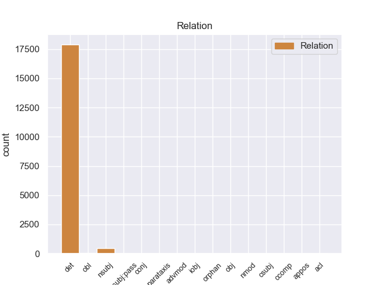

Distribution of features within this leaf



Agreement Rules sorted by frequency.
- When the dependent token is the determiner(det) of the head token, and the dependent token is DET.
1 - _ _ _ _ 0 _ _ _
2 Все весь DET _ Case=Nom|Number=Plur 3 det 3:det _
3 дороги дорога NOUN _ Animacy=Inan|Case=Nom|Gender=Fem|Number=Plur 0 _ _ _
4 куда-нибудь _ _ _ _ 0 _ _ _
5 ведут _ _ _ _ 0 _ _ _
6 , _ _ _ _ 0 _ _ _
7 - _ _ _ _ 0 _ _ _
8 сказал _ _ _ _ 0 _ _ _
9 он _ _ _ _ 0 _ _ _
10 с _ _ _ _ 0 _ _ _
11 кроткой _ _ _ _ 0 _ _ _
12 убежденностью _ _ _ _ 0 _ _ _
13 и _ _ _ _ 0 _ _ _
14 , _ _ _ _ 0 _ _ _
15 водворив _ _ _ _ 0 _ _ _
16 очки _ _ _ _ 0 _ _ _
17 назад _ _ _ _ 0 _ _ _
18 , _ _ _ _ 0 _ _ _
19 принялся _ _ _ _ 0 _ _ _
20 за _ _ _ _ 0 _ _ _
21 работу _ _ _ _ 0 _ _ _
22 . _ _ _ _ 0 _ _ _
1 Старший _ _ _ _ 0 _ _ _
2 из _ _ _ _ 0 _ _ _
3 близнецов _ _ _ _ 0 _ _ _
4 осторожно _ _ _ _ 0 _ _ _
5 взял _ _ _ _ 0 _ _ _
6 перышко _ _ _ _ 0 _ _ _
7 , _ _ _ _ 0 _ _ _
8 провел _ _ _ _ 0 _ _ _
9 им _ _ _ _ 0 _ _ _
10 по _ _ _ _ 0 _ _ _
11 щеке _ _ _ _ 0 _ _ _
12 и _ _ _ _ 0 _ _ _
13 передал _ _ _ _ 0 _ _ _
14 брату _ _ _ _ 0 _ _ _
15 , _ _ _ _ 0 _ _ _
16 тот тот DET _ Case=Nom|Gender=Masc|Number=Sing 17 nsubj 17:nsubj _
17 повторил повторить VERB _ Aspect=Perf|Gender=Masc|Mood=Ind|Number=Sing|Tense=Past|VerbForm=Fin|Voice=Act 0 _ _ _
18 его _ _ _ _ 0 _ _ _
19 жест _ _ _ _ 0 _ _ _
20 . _ _ _ _ 0 _ _ _
1 Не _ _ _ _ 0 _ _ _
2 забывает забывать VERB _ Aspect=Imp|Mood=Ind|Number=Sing|Person=3|Tense=Pres|VerbForm=Fin|Voice=Act 0 _ _ _
3 он _ _ _ _ 0 _ _ _
4 только _ _ _ _ 0 _ _ _
5 об _ _ _ _ 0 _ _ _
6 одном один DET _ Case=Loc|Degree=Pos|Gender=Masc|Number=Sing 2 obl 2:obl SpaceAfter=No
7 , _ _ _ _ 0 _ _ _
8 что _ _ _ _ 0 _ _ _
9 ближе _ _ _ _ 0 _ _ _
10 всего _ _ _ _ 0 _ _ _
11 его _ _ _ _ 0 _ _ _
12 сердцу _ _ _ _ 0 _ _ _
13 , _ _ _ _ 0 _ _ _
14 - _ _ _ _ 0 _ _ _
15 о _ _ _ _ 0 _ _ _
16 себе _ _ _ _ 0 _ _ _
17 самом _ _ _ _ 0 _ _ _
18 . _ _ _ _ 0 _ _ _
1 Казалось _ _ _ _ 0 _ _ _
2 , _ _ _ _ 0 _ _ _
3 каждый каждый DET _ Case=Nom|Gender=Masc|Number=Sing 6 nsubj:pass 6:nsubj:pass _
4 из _ _ _ _ 0 _ _ _
5 них _ _ _ _ 0 _ _ _
6 заключен заключить VERB _ Aspect=Perf|Gender=Masc|Number=Sing|Tense=Past|Variant=Short|VerbForm=Part|Voice=Pass 0 _ _ _
7 в _ _ _ _ 0 _ _ _
8 прозрачную _ _ _ _ 0 _ _ _
9 до _ _ _ _ 0 _ _ _
10 незримости _ _ _ _ 0 _ _ _
11 оболочку _ _ _ _ 0 _ _ _
12 , _ _ _ _ 0 _ _ _
13 проницаемую _ _ _ _ 0 _ _ _
14 лишь _ _ _ _ 0 _ _ _
15 для _ _ _ _ 0 _ _ _
16 им _ _ _ _ 0 _ _ _
17 подобных _ _ _ _ 0 _ _ _
18 . _ _ _ _ 0 _ _ _
1 Все _ _ _ _ 0 _ _ _
2 одна один DET _ Case=Nom|Degree=Pos|Gender=Fem|Number=Sing 0 _ _ _
3 , _ _ _ _ 0 _ _ _
4 кругом _ _ _ _ 0 _ _ _
5 одна один DET _ Case=Nom|Degree=Pos|Gender=Fem|Number=Sing 2 conj 2:conj SpaceAfter=No
6 , _ _ _ _ 0 _ _ _
7 помощников _ _ _ _ 0 _ _ _
8 нет _ _ _ _ 0 _ _ _
9 . _ _ _ _ 0 _ _ _
1 Действует _ _ _ _ 0 _ _ _
2 принцип принцип NOUN _ Animacy=Inan|Case=Nom|Gender=Masc|Number=Sing 0 _ _ _
3 : _ _ _ _ 0 _ _ _
4 " _ _ _ _ 0 _ _ _
5 свой свой DET _ Case=Nom|Gender=Masc|Number=Sing 2 parataxis 2:parataxis _
6 - _ _ _ _ 0 _ _ _
7 чужой _ _ _ _ 0 _ _ _
8 " _ _ _ _ 0 _ _ _
9 , _ _ _ _ 0 _ _ _
10 ведь _ _ _ _ 0 _ _ _
11 яркий _ _ _ _ 0 _ _ _
12 , _ _ _ _ 0 _ _ _
13 талантливый _ _ _ _ 0 _ _ _
14 человек _ _ _ _ 0 _ _ _
15 может _ _ _ _ 0 _ _ _
16 сломать _ _ _ _ 0 _ _ _
17 сложившийся _ _ _ _ 0 _ _ _
18 порядок _ _ _ _ 0 _ _ _
19 вещей _ _ _ _ 0 _ _ _
20 , _ _ _ _ 0 _ _ _
21 потому _ _ _ _ 0 _ _ _
22 - _ _ _ _ 0 _ _ _
23 то _ _ _ _ 0 _ _ _
24 " _ _ _ _ 0 _ _ _
25 чужаки _ _ _ _ 0 _ _ _
26 " _ _ _ _ 0 _ _ _
27 и _ _ _ _ 0 _ _ _
28 не _ _ _ _ 0 _ _ _
29 проходят _ _ _ _ 0 _ _ _
30 . _ _ _ _ 0 _ _ _
1 Настоящие _ _ _ _ 0 _ _ _
2 школьные _ _ _ _ 0 _ _ _
3 коллективы _ _ _ _ 0 _ _ _
4 упорно _ _ _ _ 0 _ _ _
5 пробивали _ _ _ _ 0 _ _ _
6 дорогу _ _ _ _ 0 _ _ _
7 к _ _ _ _ 0 _ _ _
8 счастью _ _ _ _ 0 _ _ _
9 , _ _ _ _ 0 _ _ _
10 к _ _ _ _ 0 _ _ _
11 взаимопониманию _ _ _ _ 0 _ _ _
12 поколений _ _ _ _ 0 _ _ _
13 , _ _ _ _ 0 _ _ _
13.1 _ _ _ _ _ 0 _ _ _
When the dependent token is the adverbial modifier(advmod) of the head token, and the dependent token is DET.
1 В _ _ _ _ 0 _ _ _
2 любом _ _ _ _ 0 _ _ _
3 случае _ _ _ _ 0 _ _ _
4 , _ _ _ _ 0 _ _ _
5 на _ _ _ _ 0 _ _ _
6 положении _ _ _ _ 0 _ _ _
7 России _ _ _ _ 0 _ _ _
8 это _ _ _ _ 0 _ _ _
9 никоим никой DET _ Case=Ins|Gender=Masc|Number=Sing 12 advmod 12:advmod _
10 образом _ _ _ _ 0 _ _ _
11 не _ _ _ _ 0 _ _ _
12 отразится отразиться VERB _ Aspect=Perf|Mood=Ind|Number=Sing|Person=3|Tense=Fut|VerbForm=Fin|Voice=Mid 0 _ _ _
13 . _ _ _ _ 0 _ _ _
When the dependent token is the object(obj) of the head token, and the dependent token is DET.
1 Писал писать VERB _ Aspect=Imp|Gender=Masc|Mood=Ind|Number=Sing|Tense=Past|VerbForm=Fin|Voice=Act 0 _ _ _
2 он _ _ _ _ 0 _ _ _
3 всегда _ _ _ _ 0 _ _ _
4 одно один DET _ Case=Acc|Degree=Pos|Gender=Neut|Number=Sing 1 obj 1:obj _
5 и _ _ _ _ 0 _ _ _
6 то _ _ _ _ 0 _ _ _
7 же _ _ _ _ 0 _ _ _
8 : _ _ _ _ 0 _ _ _
9 " _ _ _ _ 0 _ _ _
10 Настя _ _ _ _ 0 _ _ _
11 Делянкина _ _ _ _ 0 _ _ _
12 , _ _ _ _ 0 _ _ _
13 Настя _ _ _ _ 0 _ _ _
14 Делянкина _ _ _ _ 0 _ _ _
15 " _ _ _ _ 0 _ _ _
16 , _ _ _ _ 0 _ _ _
17 и _ _ _ _ 0 _ _ _
18 так _ _ _ _ 0 _ _ _
19 - _ _ _ _ 0 _ _ _
19.1 _ _ _ _ _ 0 _ _ _
20 много _ _ _ _ 0 _ _ _
21 раз _ _ _ _ 0 _ _ _
22 , _ _ _ _ 0 _ _ _
23 пока _ _ _ _ 0 _ _ _
24 хватало _ _ _ _ 0 _ _ _
25 места _ _ _ _ 0 _ _ _
26 . _ _ _ _ 0 _ _ _
When the dependent token is the indirect object(iobj) of the head token, and the dependent token is DET.
1 Ни _ _ _ _ 0 _ _ _
2 право _ _ _ _ 0 _ _ _
3 на _ _ _ _ 0 _ _ _
4 равенство _ _ _ _ 0 _ _ _
5 ( _ _ _ _ 0 _ _ _
6 скажем _ _ _ _ 0 _ _ _
7 , _ _ _ _ 0 _ _ _
8 между _ _ _ _ 0 _ _ _
9 верующими _ _ _ _ 0 _ _ _
10 и _ _ _ _ 0 _ _ _
11 неверующими _ _ _ _ 0 _ _ _
12 ) _ _ _ _ 0 _ _ _
13 , _ _ _ _ 0 _ _ _
14 ни _ _ _ _ 0 _ _ _
15 свобода _ _ _ _ 0 _ _ _
16 слова _ _ _ _ 0 _ _ _
17 ( _ _ _ _ 0 _ _ _
18 то _ _ _ _ 0 _ _ _
19 , _ _ _ _ 0 _ _ _
20 что _ _ _ _ 0 _ _ _
21 одному один DET _ Case=Dat|Degree=Pos|Gender=Masc|Number=Sing 22 iobj 22:iobj _
22 кажется казаться VERB _ Aspect=Imp|Mood=Ind|Number=Sing|Person=3|Tense=Pres|VerbForm=Fin|Voice=Mid 0 _ _ _
23 оскорблением _ _ _ _ 0 _ _ _
24 , _ _ _ _ 0 _ _ _
25 для _ _ _ _ 0 _ _ _
26 другого _ _ _ _ 0 _ _ _
27 свобода _ _ _ _ 0 _ _ _
28 критики _ _ _ _ 0 _ _ _
29 ) _ _ _ _ 0 _ _ _
30 . _ _ _ _ 0 _ _ _
When the dependent token is the clausal subject(csubj) of the head token, and the dependent token is DET.
1 И _ _ _ _ 0 _ _ _
2 вполне _ _ _ _ 0 _ _ _
3 возможно _ _ _ _ 0 _ _ _
4 , _ _ _ _ 0 _ _ _
5 что _ _ _ _ 0 _ _ _
6 реальное _ _ _ _ 0 _ _ _
7 настроение _ _ _ _ 0 _ _ _
8 президента _ _ _ _ 0 _ _ _
9 Медведева _ _ _ _ 0 _ _ _
10 далеко _ _ _ _ 0 _ _ _
11 не _ _ _ _ 0 _ _ _
12 такое _ _ _ _ 0 _ _ _
13 " _ _ _ _ 0 _ _ _
14 собранное _ _ _ _ 0 _ _ _
15 и _ _ _ _ 0 _ _ _
16 напряженное _ _ _ _ 0 _ _ _
17 " _ _ _ _ 0 _ _ _
18 , _ _ _ _ 0 _ _ _
19 каким какой DET _ Case=Ins|Gender=Neut|Number=Sing 20 csubj 20:csubj _
20 стоило стоить VERB _ Aspect=Imp|Gender=Neut|Mood=Ind|Number=Sing|Tense=Past|VerbForm=Fin|Voice=Act 0 _ _ _
21 бы _ _ _ _ 0 _ _ _
22 ему _ _ _ _ 0 _ _ _
23 сегодня _ _ _ _ 0 _ _ _
24 быть _ _ _ _ 0 _ _ _
25 . _ _ _ _ 0 _ _ _
When the dependent token is the nominal modifier(nmod) of the head token, and the dependent token is DET.
1 И _ _ _ _ 0 _ _ _
2 вот _ _ _ _ 0 _ _ _
3 мы _ _ _ _ 0 _ _ _
4 , _ _ _ _ 0 _ _ _
5 живущие _ _ _ _ 0 _ _ _
6 одновременно _ _ _ _ 0 _ _ _
7 и _ _ _ _ 0 _ _ _
8 сразу _ _ _ _ 0 _ _ _
9 в _ _ _ _ 0 _ _ _
10 двух _ _ _ _ 0 _ _ _
11 эпохах _ _ _ _ 0 _ _ _
12 , _ _ _ _ 0 _ _ _
13 должны _ _ _ _ 0 _ _ _
14 сделать _ _ _ _ 0 _ _ _
15 выбор _ _ _ _ 0 _ _ _
16 в _ _ _ _ 0 _ _ _
17 пользу польза NOUN _ Animacy=Inan|Case=Acc|Gender=Fem|Number=Sing 0 _ _ _
18 одной один DET _ Case=Gen|Degree=Pos|Gender=Fem|Number=Sing 17 nmod 17:nmod _
19 или _ _ _ _ 0 _ _ _
20 другой _ _ _ _ 0 _ _ _
21 . _ _ _ _ 0 _ _ _
When the dependent token is the appositional modifier(appos) of the head token, and the dependent token is DET.
1 Запись _ _ _ _ 0 _ _ _
2 производится _ _ _ _ 0 _ _ _
3 на _ _ _ _ 0 _ _ _
4 специальном _ _ _ _ 0 _ _ _
5 бланке _ _ _ _ 0 _ _ _
6 , _ _ _ _ 0 _ _ _
7 куда _ _ _ _ 0 _ _ _
8 игрок _ _ _ _ 0 _ _ _
9 вписывает _ _ _ _ 0 _ _ _
10 ходы ход NOUN _ Animacy=Inan|Case=Acc|Gender=Masc|Number=Plur 0 _ _ _
11 , _ _ _ _ 0 _ _ _
When the dependent token is the adjectival clause(acl) of the head token, and the dependent token is DET.
1 За _ _ _ _ 0 _ _ _
2 исключением _ _ _ _ 0 _ _ _
3 небесспорного _ _ _ _ 0 _ _ _
4 тезиса _ _ _ _ 0 _ _ _
5 о _ _ _ _ 0 _ _ _
6 том то PRON _ Animacy=Inan|Case=Loc|Gender=Neut|Number=Sing 0 _ _ _
7 , _ _ _ _ 0 _ _ _
8 что _ _ _ _ 0 _ _ _
9 служение _ _ _ _ 0 _ _ _
10 Богу _ _ _ _ 0 _ _ _
11 и _ _ _ _ 0 _ _ _
12 Церкви _ _ _ _ 0 _ _ _
13 - _ _ _ _ 0 _ _ _
14 всегда _ _ _ _ 0 _ _ _
15 одно один DET _ Case=Nom|Degree=Pos|Gender=Neut|Number=Sing 6 acl 6:acl _
16 и _ _ _ _ 0 _ _ _
17 то _ _ _ _ 0 _ _ _
18 же _ _ _ _ 0 _ _ _
19 , _ _ _ _ 0 _ _ _
20 всё _ _ _ _ 0 _ _ _
21 это _ _ _ _ 0 _ _ _
22 можно _ _ _ _ 0 _ _ _
23 было _ _ _ _ 0 _ _ _
24 сказать _ _ _ _ 0 _ _ _
25 и _ _ _ _ 0 _ _ _
26 короче _ _ _ _ 0 _ _ _
27 : _ _ _ _ 0 _ _ _
28 пойдите _ _ _ _ 0 _ _ _
29 вон _ _ _ _ 0 _ _ _
30 , _ _ _ _ 0 _ _ _
31 ублюдки _ _ _ _ 0 _ _ _
32 . _ _ _ _ 0 _ _ _
Disagree Examples:
1 Все _ _ _ _ 0 _ _ _
2 мысли _ _ _ _ 0 _ _ _
3 его _ _ _ _ 0 _ _ _
4 , _ _ _ _ 0 _ _ _
5 все _ _ _ _ 0 _ _ _
6 душевные _ _ _ _ 0 _ _ _
7 усилия _ _ _ _ 0 _ _ _
8 сосредоточены сосредоточить VERB _ Aspect=Perf|Number=Plur|Tense=Past|Variant=Short|VerbForm=Part|Voice=Pass 0 _ _ _
9 на _ _ _ _ 0 _ _ _
10 одном один DET _ Case=Loc|Degree=Pos|Gender=Neut|Number=Sing 8 obl 8:obl SpaceAfter=No
11 : _ _ _ _ 0 _ _ _
12 вытянуть _ _ _ _ 0 _ _ _
13 наверх _ _ _ _ 0 _ _ _
14 пушку _ _ _ _ 0 _ _ _
15 . _ _ _ _ 0 _ _ _
1 Среди _ _ _ _ 0 _ _ _
2 тех тот DET _ Case=Gen|Number=Plur 22 det 22:det SpaceAfter=No
3 , _ _ _ _ 0 _ _ _
4 кто _ _ _ _ 0 _ _ _
5 бежал _ _ _ _ 0 _ _ _
6 от _ _ _ _ 0 _ _ _
7 пушки _ _ _ _ 0 _ _ _
8 , _ _ _ _ 0 _ _ _
9 и _ _ _ _ 0 _ _ _
10 тех _ _ _ _ 0 _ _ _
11 , _ _ _ _ 0 _ _ _
12 кто _ _ _ _ 0 _ _ _
13 бежал _ _ _ _ 0 _ _ _
14 навстречу _ _ _ _ 0 _ _ _
15 им _ _ _ _ 0 _ _ _
16 , _ _ _ _ 0 _ _ _
17 чтобы _ _ _ _ 0 _ _ _
18 остановить _ _ _ _ 0 _ _ _
19 , _ _ _ _ 0 _ _ _
20 он _ _ _ _ 0 _ _ _
21 один _ _ _ _ 0 _ _ _
22 шел идти VERB _ Aspect=Imp|Gender=Masc|Mood=Ind|Number=Sing|Tense=Past|VerbForm=Fin|Voice=Act 0 _ _ _
23 своим _ _ _ _ 0 _ _ _
24 обычным _ _ _ _ 0 _ _ _
25 шагом _ _ _ _ 0 _ _ _
26 . _ _ _ _ 0 _ _ _
1 Главное _ _ _ _ 0 _ _ _
2 отличие отличие NOUN _ Animacy=Inan|Case=Nom|Gender=Neut|Number=Sing 0 _ _ _
3 человеческих _ _ _ _ 0 _ _ _
4 инженерных _ _ _ _ 0 _ _ _
5 конструкций _ _ _ _ 0 _ _ _
6 от _ _ _ _ 0 _ _ _
7 тех тот DET _ Case=Gen|Number=Plur 2 det 2:det SpaceAfter=No
8 , _ _ _ _ 0 _ _ _
9 что _ _ _ _ 0 _ _ _
10 создала _ _ _ _ 0 _ _ _
11 природа _ _ _ _ 0 _ _ _
12 , _ _ _ _ 0 _ _ _
13 состоит _ _ _ _ 0 _ _ _
14 в _ _ _ _ 0 _ _ _
15 невероятной _ _ _ _ 0 _ _ _
16 энергоэффективности _ _ _ _ 0 _ _ _
17 последних _ _ _ _ 0 _ _ _
18 . _ _ _ _ 0 _ _ _
1 И _ _ _ _ 0 _ _ _
2 для _ _ _ _ 0 _ _ _
3 каждого каждый DET _ Case=Gen|Gender=Masc|Number=Sing 12 det 12:det _
4 из _ _ _ _ 0 _ _ _
5 них _ _ _ _ 0 _ _ _
6 , _ _ _ _ 0 _ _ _
7 по _ _ _ _ 0 _ _ _
8 мнению _ _ _ _ 0 _ _ _
9 Юрия _ _ _ _ 0 _ _ _
10 Израэля _ _ _ _ 0 _ _ _
11 , _ _ _ _ 0 _ _ _
12 характерны характерный ADJ _ Degree=Pos|Number=Plur|Variant=Short 0 _ _ _
13 те _ _ _ _ 0 _ _ _
14 или _ _ _ _ 0 _ _ _
15 иные _ _ _ _ 0 _ _ _
16 погодные _ _ _ _ 0 _ _ _
17 проявления _ _ _ _ 0 _ _ _
18 . _ _ _ _ 0 _ _ _
1 Не _ _ _ _ 0 _ _ _
2 учли учесть VERB _ Aspect=Perf|Mood=Ind|Number=Plur|Tense=Past|VerbForm=Fin|Voice=Act 0 _ _ _
3 мы _ _ _ _ 0 _ _ _
4 одного один DET _ Case=Gen|Degree=Pos|Gender=Neut|Number=Sing 2 obl 2:obl SpaceAfter=No
5 . _ _ _ _ 0 _ _ _